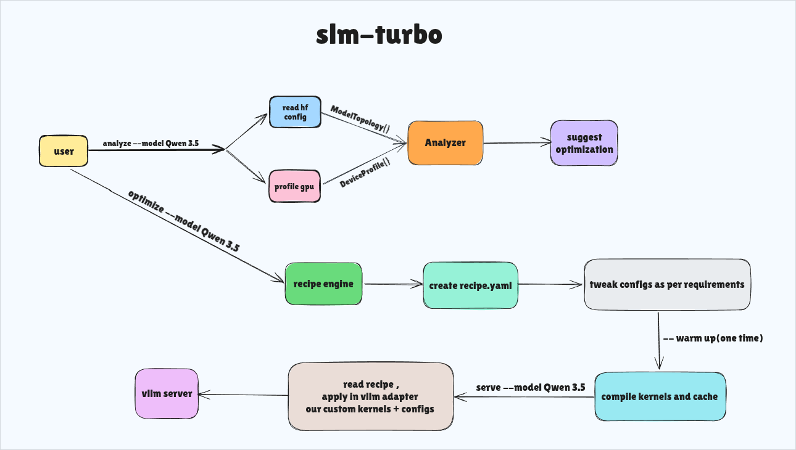
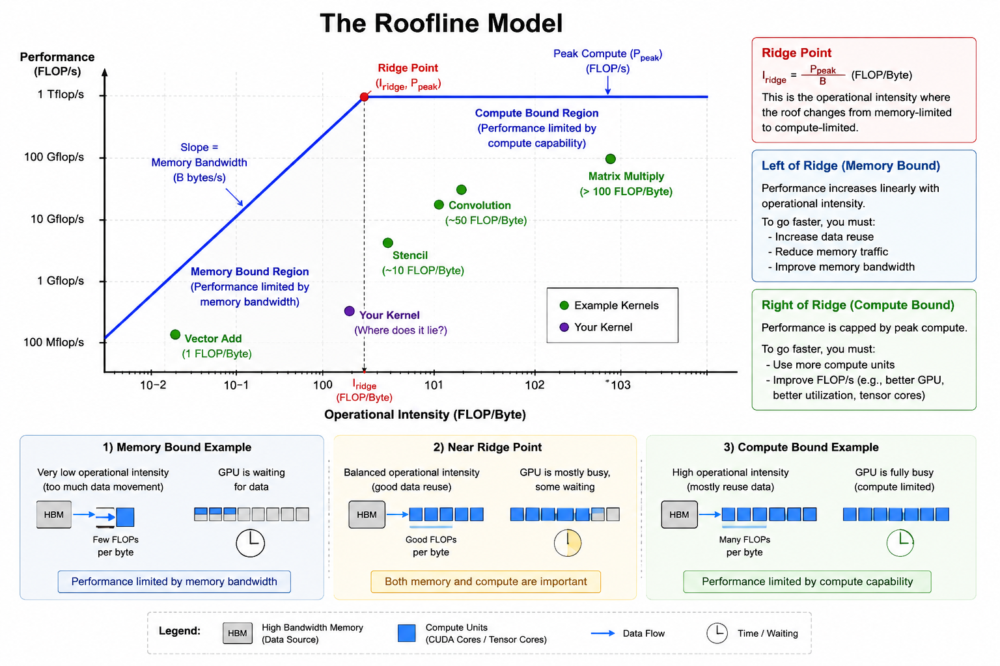
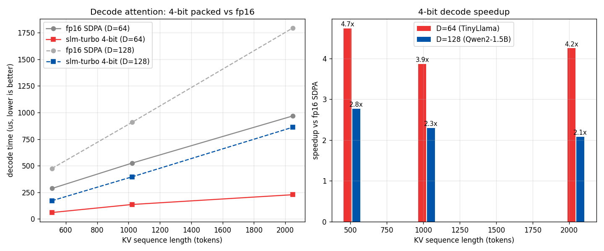
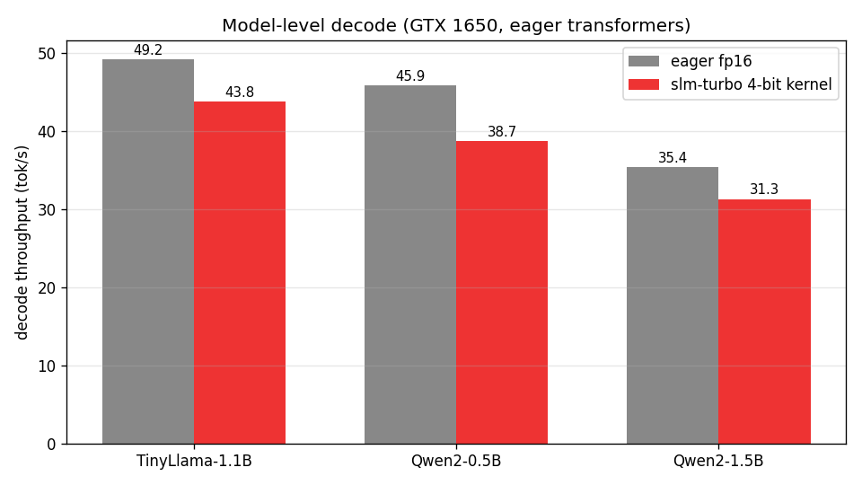

Different hardware, different bottlenecks.
Prefill is compute-bound (large matmuls). Decode is memory-bandwidth-bound (small kernels + huge KV reads). The same model needs a different recipe on a GTX 1650 and an A100. Shipping one config to all GPUs leaves performance on the table — or OOMs the small ones.
SLM Turbo fixes the diagnosis gap. Not 50 knobs — one measured answer: why it's slow on your GPU and what to apply.
| Phase | Bound | What hurts | What helps |
|---|---|---|---|
| Prefill | Compute | Large matmuls, attention occupancy | FlashAttention-2 (sm_80+), SDPA fallback |
| Decode | Memory bandwidth | KV cache reads every token | 4-bit packed KV, prefix cache, backend choice |
Recipe (Pydantic). A run is {baseline_profile, recipe, applied_profile, delta} — versioned, validated, git-diffable.
- Model-agnostic via topology.
ModelTopologyfromconfig.jsonalone — heads, GQA/MQA, head_dim, layers. Never a model name. - GPU-agnostic via capability.
DeviceProfileprobes sm, bandwidth, VRAM, tensor cores. Gates are capability checks, not GPU names. - vLLM as a library, not a fork. Only
adapters/vllm_adapter.pyknows vLLM. Two injection points.
Four optimizers. One decision per (model, GPU).
Each gates itself with can_apply(topology, device). No hard-coded names — measured thresholds only.
| Optimizer | What it changes | When it applies |
|---|---|---|
| KV Quantization asymmetric 4-bit K / 2–4-bit V | Cuts KV memory. Dequant in registers during attention — never writes fp16 back to DRAM. Block 64/128 tuned per bandwidth. | VRAM <8 GB or KV >50% VRAM. Decode only. |
| Prefix Cache radix-style | Hashes prompts, skips prefill for repeated prefixes. LRU eviction. | ≤80 layers · chat / repeated system prompts |
| Chunked Prefill | Splits long prefill 512/1024, interleaves with decode. | Contexts >4096. Always safe. |
| Attention Backend | Selects FA2, custom Triton, or SDPA per device + head_dim. | FA2 on sm_80+ TCC · Triton sm_75+ · SDPA fallback |
Layered. Isolated at the adapter.
Data flows top to bottom; isolation flows bottom to top. If vLLM's API changes, only one file breaks. Below is the actual system diagram — not a mock.

analyze derives topology + device → roofline Analyzer classifies → suggest → optimize via Recipe Engine writes recipe.yaml → tweak configs → warmup compiles Triton kernels → serve reads recipe and injects via vllm_adapter into vLLM server. Two hooks only: AttentionBackend + CacheConfig. No fork.slm_turbo/cli.py · engine/ · topology/ · optimizers/ · adapters/ · kernels/triton/ — see repo for full tree.Data flow
analyze → 2 config.json → ModelTopology → 3 GPU → DeviceProfile → 4 roofline → 5 Recipe → 6 can_apply() → 7 adapter → 8 serveslm_turbo/
├── cli.py
├── engine/ core.py · profiler.py · roofline.py · recipe.py · snapshot.py
├── topology/ probe.py · vlm.py
├── optimizers/ base.py · kv_quant.py · prefix_cache.py · chunked_prefill.py · attention_backend.py
├── adapters/ base.py · vllm_adapter.py · mock_adapter.py
└── kernels/triton/ kv_dequant.py · layout.py
Measured on a GTX 1650. Reproducible.
PyTorch 2.11 + CUDA 13.1 on GTX 1650 (sm_75, 4 GB, no tensor cores). The worst-case GPU is the proof. Reproduce with python kernels/benchmark/benchmark.py.
Decode attention — 4-bit packed vs fp16 (op-level)
Decode is memory-bound. 4× less memory per step translates directly to speed. Our hand-written CUDA kernel is 2–4.7× faster than fp16 at the op level.
| Seq len | D=64 kernel | D=64 fp16 | Speedup | D=128 kernel | D=128 fp16 | Speedup |
|---|---|---|---|---|---|---|
| 512 | 60.5 µs | 286.5 µs | 4.74× | 171.6 µs | 474.8 µs | 2.77× |
| 1024 | 136.1 µs | 525.4 µs | 3.86× | 396.3 µs | 908.9 µs | 2.29× |
| 2048 | 227.8 µs | 967.7 µs | 4.25× | 861.6 µs | 1794.0 µs | 2.08× |
Reproduce: python kernels/benchmark/benchmark.py --op-only · KV per token drops 16–32×: 8 MB → 256 KB at 2048 tokens (D=64, KV=4).

KV capacity (same 0.72 GiB)
121,456 tokens
vs 34,160 stock vLLM — 3.56× with native packed cache
Long-context win
2–4.7×
Op speedup · prefill stays on SDPA (no TCC on sm_75)
Model-level decode (full model, eager)
| Model | Layers | Head dim | Eager fp16 | SLM Turbo 4-bit |
|---|---|---|---|---|
| TinyLlama-1.1B-Chat | 22 | 64 | 49.2 tok/s | 43.8 tok/s (0.89×) |
| Qwen2-0.5B-Instruct | 24 | 64 | 45.9 tok/s | 38.7 tok/s (0.84×) |
| Qwen2-1.5B-Instruct | 28 | 128 | 35.4 tok/s | 31.3 tok/s (0.89×) |
Reproduce: python kernels/benchmark/benchmark.py --model-only --model TinyLlama/TinyLlama-1.1B-Chat-v1.0 · At short context matmuls dominate — the 4-bit win is maximal at long context / op-level.

Offline optimization: analyze → optimize → serve.
File-first, git-friendly. Hot-reconfigure deferred for v1.
slm-turbo analyze --model <id>No model load · analyticalDownloads config.json, builds topology, probes GPU, runs roofline, prints diagnosis.
Model: meta-llama/Llama-2-7b-hf
Topology: 4096 hidden, 32 heads, 32 layers, GQA=False
GPU: GTX 1650 (sm_75, 4GB VRAM)
Bottleneck: Memory-bound (decode phase)
KV cache: 2.1 GB at 4096 tokens (53% of VRAM)
Recommendation: Apply KV quantization + chunked prefillslm-turbo optimize --model <id> [--recipe <file>]Generates recipe.yamlValidates existing or generates new. Saved to ~/.slm-turbo/recipes/<model>_<gpu_hash>.yaml with expected deltas.
slm-turbo optimize --model TinyLlama/TinyLlama-1.1B-Chat-v1.0
# recipe: kv_quant=on (4-bit K, 4-bit V) · chunked_prefill=1024 · backend=custom_tritonslm-turbo serve --model <id> --config <file>Launches vLLMBuilds CacheConfig + AttentionBackend from recipe, injects adapters, starts vLLM. Metrics on :8000/metrics.
slm-turbo statusLive metricsThroughput (tokens/sec) · latency p50/p99 · GPU utilization · KV cache fill · active requests.
slm-turbo warmup --model <id>One-time cachePre-downloads weights, JIT-compiles Triton to ~/.triton/cache/, verifies can_apply(). Next run instant.
slm-turbo doctorEnvironment checkPython 3.9+ · PyTorch + CUDA · sm/VRAM · vLLM & Triton · cache-dir perms · RAM/VRAM.
Small surface. Standard tools.
| Component | Version | Purpose |
|---|---|---|
| Python | 3.9+ | Primary language |
| PyTorch | 2.0+ | Tensor ops, CUDA |
| Transformers | 4.40+ | HF config probing |
| vLLM | 0.4+ | Serving integration |
| Triton | bundled | GPU kernels (fused dequant + attention) |
| Typer | latest | CLI |
| Rich | latest | Terminal output |
| Pydantic | v2 | Schemas & validation |
| SQLite | stdlib | Run storage (v1) |
Linux only · CUDA 11.8 / 12.x · Triton JIT on first run, cached to ~/.triton/cache/.
Install, check, run.
Install
# Base — analyze / optimize / doctor
pip install slm-turbo
# With vLLM backend (needed for `serve`)
pip install "slm-turbo[gpu]"
# Or without installing (uv)
uvx slm-turbo analyze --model meta-llama/Llama-2-7b-hf
# From source
git clone https://github.com/sagnik3788/slm-turbo.git
cd slm-turbo
pip install -e ".[gpu]"
slm-turbo doctorQuick start
slm-turbo doctor
slm-turbo analyze --model TinyLlama/TinyLlama-1.1B-Chat-v1.0
slm-turbo optimize --model TinyLlama/TinyLlama-1.1B-Chat-v1.0
slm-turbo warmup --model TinyLlama/TinyLlama-1.1B-Chat-v1.0
slm-turbo serve --model TinyLlama/TinyLlama-1.1B-Chat-v1.0 --config ~/.slm-turbo/recipes/*.yaml
slm-turbo status # in another terminalA run is {baseline_profile, recipe, applied_profile, delta} — persisted, diffable. Recipes are YAML, human-editable, validated against topology + device hash.
Key concepts
- Prefill vs decode — prefill compute-bound, decode memory-bound. Profiled separately.
- Roofline — intensity (FLOPs/byte) vs ridge point to classify bound.
- Asymmetric quant — keys more sensitive than values; quantized differently.
- PagedAttention — non-contiguous KV; layouts respect paging.